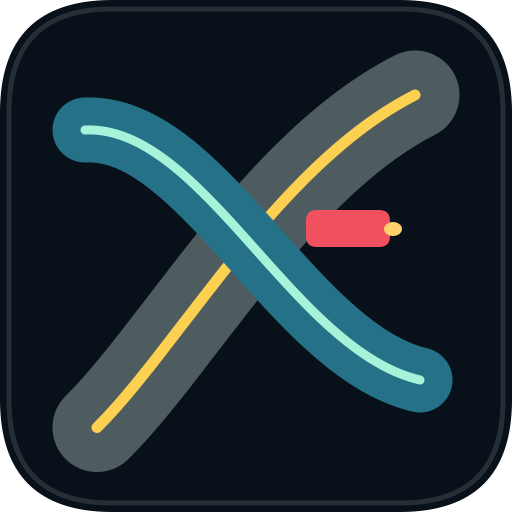

Open normal SUMO files
Load .sumocfg and .net.xml files, including additional polygons and POIs, without converting projects into a custom format.

Native macOS SUMO viewer
A lightweight SwiftUI + Metal alternative to sumo-gui for opening SUMO scenarios, running or attaching over TraCI, visualizing live traffic, and inspecting the objects that matter.
SumoGUIMac focuses on the workflows researchers and engineers reach for first: open a scenario, watch traffic move, inspect objects, tune visualization, and attach to controller-driven runs.
Load .sumocfg and .net.xml files, including additional polygons and POIs, without converting projects into a custom format.
Launch a local SUMO process or attach as a viewer client to an external run driven by another controller.
Draw lanes, junctions, live vehicles, selected routes, polygons, POIs, and background decals with a native GPU renderer.
Select vehicles and edges, copy identifiers, follow vehicles, highlight routes, set breakpoints, and chart selected-object variables.
Use familiar sidebars, inspector tabs, toolbar actions, keyboard shortcuts, Open Recent, and native dark-mode presentation.
The app is MIT licensed and interoperates with a separately installed Eclipse SUMO runtime over TraCI.
The alpha is intentionally narrow: a lightweight viewer and inspector, not a full replacement for netedit, 3D mode, detector tooling, or every advanced SUMO GUI panel.
That narrower scope is the point. It gives macOS users a clean way to work with SUMO scenarios when the upstream GUI feels out of place or unreliable on modern systems.
This is ready to present as a lightweight macOS alternative, while staying clear about the pieces that still belong to a later parity pass.
SumoGUIMac does not bundle Eclipse SUMO. Install SUMO separately, then build the native macOS app from source.
git clone https://github.com/christofilojohn/SumoMacGUI.git
cd SumoMacGUI
swift test
xcodebuild -project SumoGUIMac.xcodeproj \
-scheme SumoGUIMacApp \
-configuration Debug \
-destination platform=macOS buildSumoGUIMac interoperates with a user-installed Eclipse SUMO runtime and is not affiliated with or endorsed by the SUMO maintainers. Please credit Eclipse SUMO, the open-source Simulation of Urban MObility project developed primarily by DLR's Institute of Transportation Systems, when using this work in research, demos, or derived projects.